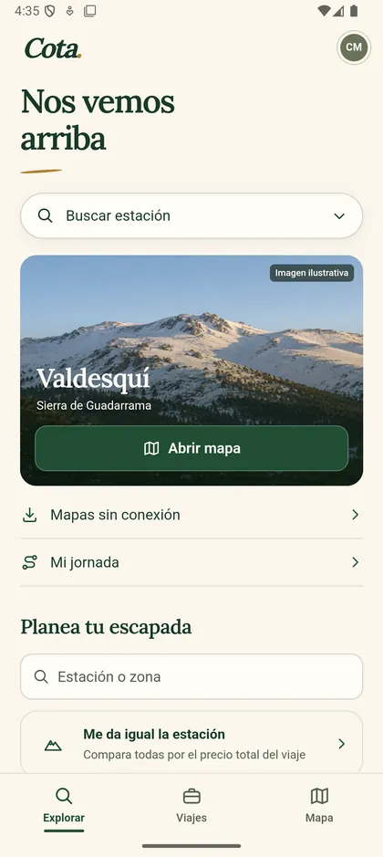
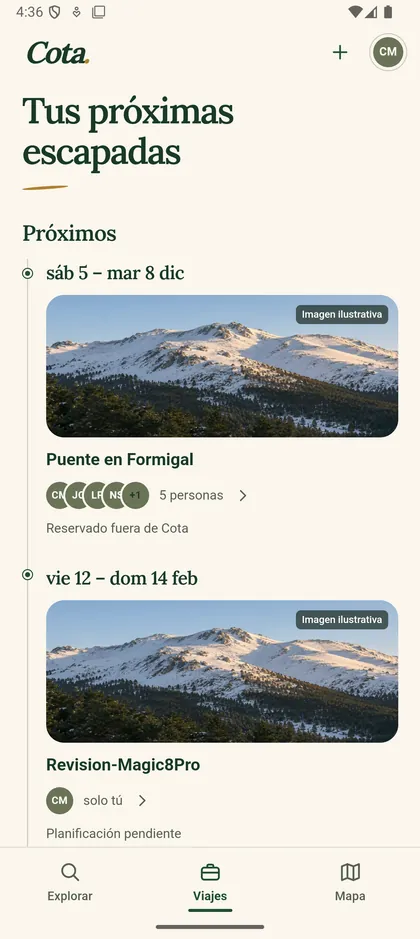

Mapas sin conexión
Descarga la estación antes de salir. En pistas, el mapa 3D funciona en modo avión.
Android
Los mismos mapas, guardados en el móvil para usarlos sin cobertura, y tu grupo a un toque: dónde está cada uno, dónde quedáis y cómo ha ido el día.
Archivo APK firmado, para Android 8 o posterior. Se instala fuera de Google Play: Android te pedirá permiso para instalar aplicaciones desde el navegador. La app avisa cuando hay una versión nueva.



Qué hace
Descarga la estación antes de salir. En pistas, el mapa 3D funciona en modo avión.
Ubicación compartida solo con tu grupo y solo mientras tú quieras, con antigüedad y precisión visibles.
Graba el día, páusalo cuando pares y revisa distancia, tiempo y recorrido. Se queda en tu móvil salvo que decidas guardarlo en tu cuenta.
Los viajes de tu cuenta, con el grupo y las notas, sincronizados con esta web.
Hoja de ruta
Preferimos decir con claridad qué funciona de verdad.